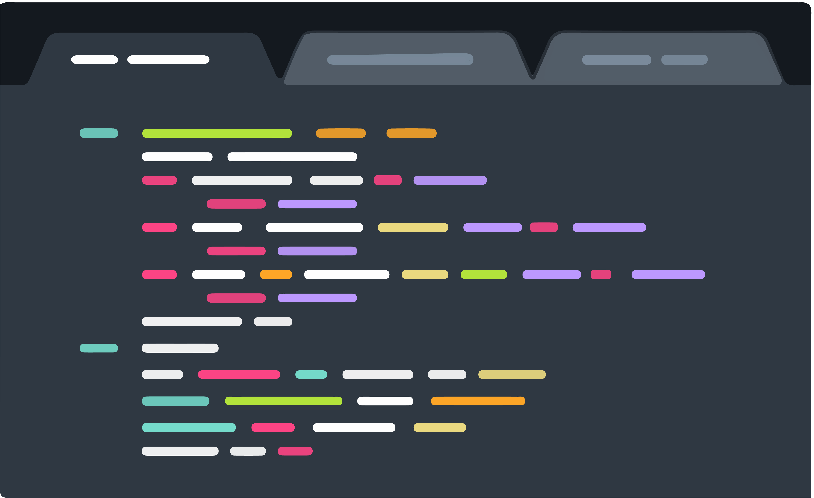
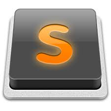
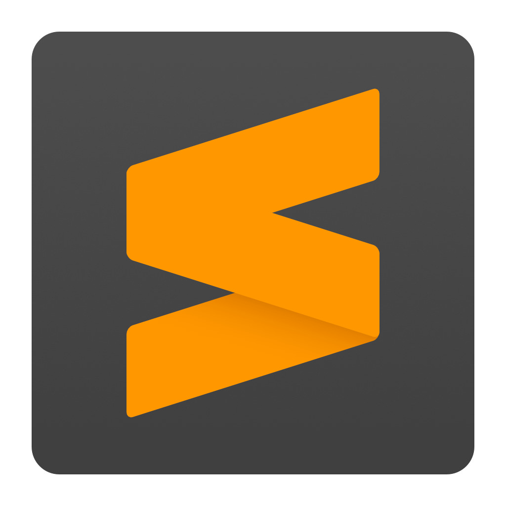

Sublime Text как редактор для новичков
Sublime Text - проприетарный текстовый редактор. Разработчик позволяет бесплатно и без ограничений ознакомиться с продуктом, однако программа уведомляет о необходимости приобретения лицензии.
Если говорить проще, то Sublime text лучший редактор для новичка-вестальщика. Из-за большого количества плагинов и дополнений, он становится отличным редактором и для профи. Историю и возможности вы можете прочитать ниже.

Возможности
Некоторые возможности:
- Быстрая навигация
- Командная палитра
- API плагинов на Python
- Одновременное редактирование
- Высокая степень настраиваемости
Поддержка языков
Sublime Text поддерживает большое количество языков программирования и имеет возможность подсветки синтаксиса для C, C++, C#, CSS, D, Dylan, Erlang, HTML, Groovy, Haskell, Java, JavaScript, LaTeX, Lisp, Lua, Markdown, MATLAB, OCaml, Perl, PHP, Python, R, Ruby, SQL, TCL и XML. Подсветка помогает проще находить нужные вам элементы, будь то теги, переменные, функции и тд.
В дополнение к тем языкам программирования, которые включены по умолчанию, пользователи имеют возможность загружать плагины для поддержки других языковЮ что облегчает возможности написания кода не прыгая с редактор на редактор.
Менеджер пакетов
Sublime Text может быть оснащён менеджером пакетов, который позволяет пользователю находить, устанавливать, обновлять и удалять пакеты без перезагрузки программы. Менеджер поддерживает установленные пакеты в актуальном состоянии, загружая новые версии из репозиториев. Кроме того, он предоставляет команды для активации и деактивации установленных пакетов.
Особенности
Интерфейс
Редактор содержит различные визуальные темы, с возможностью загрузки дополнительных. Пользователи видят весь свой код в правой части экрана в виде мини-карты, при клике на которую можно осуществлять навигацию. Есть несколько режимов экрана. Один из них включает от 1 до 4 панелей, с помощью которых можно показывать до четырёх файлов одновременно. Полноценный (free modes) режим показывает только один файл без каких-либо дополнительных меню вокруг него.

Выделение столбцов и множественная правка
Выделение столбцов целиком или расстановка нескольких указателей по тексту, что делает возможным мгновенную правку. Указатели ведут себя, будто каждый из них — один в тексте. Команды типа перемещение на знак, перемещение на строку, выборка текста, перемещение на слово или его части (CamelCase, разделённый дефисом или подчёркиванием), перемещение в начало/конец строки и т. д., влияют на все указатели независимо и сразу, позволяя править сложно структурированный текст быстро, без использования макрокоманд или регулярных выражений.
Авто дополнение
Когда пользователь набирает код, Sublime Text, в зависимости от используемого языка, будет предлагать различные варианты для завершения записи. Редактор также автоматически завершает созданные пользователем переменные.
Подсветка синтаксиса и высокая контрастность
Тёмный фон Sublime Text предназначен для увеличения контрастности текста. Основные элементы синтаксиса выделены разными цветами, которые лучше сочетаются с тёмным фоном, нежели со светлым.
Поддержка систем сборки
Sublime Text позволяет пользователю собирать программы и запускать их без необходимости переключаться на командную строку. Пользователь также может настроить свою систему сборки и включить автоматическую сборку программы каждый раз при сохранении кода.
Заготовки (сниппеты)
Сохранение фрагментов часто используемого кода, ключевые слова для их запуска.
Другие особенности
- Дополнительно реализована функция авто сохранения, помогающая пользователям не потерять проделанную работу.
- Настраиваемые комбинации клавиш и инструмент навигации позволяют назначать свои комбинации клавиш для меню и панелей инструментов (только для первой версии, во второй и третьей — Command Palette).
- Возможность поиска по мере набора используется для поиска в документе.
- Функция проверки синтаксиса работает подобным же образом, проверяя корректность прямо во время ввода.
- Есть возможность автоматизации с помощью макросов и повтора последних действий.
- Команды редактирования, включая редактирование отступов, переформатирование параграфов и объединение строк.
История
Sublime Text
Проект начался в ноябре 2007 года с целью создать «лучший текстовый редактор», первая версия программы вышла 18 января 2008 года, и была доступна только под Windows. Из возможностей программы стоит отметить:
- систему проектов: возможность объединения файлов в один проект;
- режим Distraction Free — полноэкранный режим с акцентом на содержимом;
- панель быстрого доступа для перехода по файлам проекта или файлам в текущем каталоге;
- возможность выбрать несколько строк для редактирования;
- API плагинов на Python;
- поддержка «горячих» клавиш;
- поиск по файлам.
Последняя версия Sublime Text 1 вышла 13 сентября 2010 года.
Sublime Text 2

Со второй версии редактор стал доступен под OS X и Linux.
Публичное тестирование началось с альфа-версии.
Первая бета-версия была выпущена 1 июля 2011 года, а финальная — 26 июня 2012 года.
Нововведения:
- подсветка синтаксиса языка Go;
- функция «перейти к чему-нибудь» — быстрый переход по разным участкам кода;
- палитра команд — предоставление быстрого доступа к командам;
- быстрая смена проекта;
- поддержка Mac OS X Snow Leopard и OS X Lion.
Sublime Text 3 
Бета-версия Sublime Text 3 вышла 29 января 2013 года и была доступна только для зарегистрированных пользователей, которые купили Sublime Text 2. Однако после релиза 3047, Sublime Text 3 стал доступен всем.
Финальная версия вышла 13 сентября 2017 года, 3.1 — 7 мая 2018 года, а 3.2 — 13 марта 2019 года.
Однако dev-версия доступна только зарегистрированным участникам.
Также для загрузки стали доступны deb-пакеты для GNU/Linux-дистрибутивов. Ранее же были доступны только tar-архивы.
Изменения в новой версии:
- увеличение скорости запуска программы;
- улучшения в интерфейсе, в поиске, редактировании HTML-файлов;
- использование Python 3 для плагинов;
- индексирование файлов для поиска объявления переменной, функции или класса как в современных IDE;
- улучшение производительности функции «заменить всё»;
- перемещение плагинов в отдельный процесс для предотвращения задержек загрузки и краха Sublime Text;
- переход к предыдущим позициям курсора.